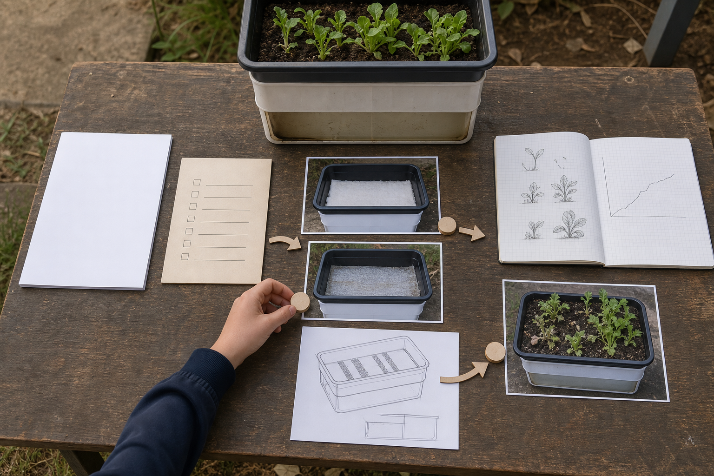

Modules 1–2
Understand the system and context
Map agricultural products and systems, use attributed public sources carefully, compare resource decisions and write early criteria.
Evidence orientation
Use the design brief and evidence pathway to understand the learning. Formal task details have not been authorised for this unit.

What counts as useful evidence
Strong evidence connects a clear decision or process with an observation, measurement, comparison, record or reasoned evaluation.
Modules 1–2
Map agricultural products and systems, use attributed public sources carefully, compare resource decisions and write early criteria.
Modules 3–6
Build a crop baseline, compare media and water pathways, observe changing conditions and respond to uncertainty responsibly.
Modules 7–8
Turn the brief into criteria, compare different concepts, plan checkpoints and record only teacher-approved practical work.
Modules 9–10
Use field records, evaluate quality against the original criteria and pitch a testable next version with an honest limitation.
Canonical student design brief · version 1.0
Situation: Useful agriculture can happen in a small space. The challenge is to create a compact crop-production system that makes careful use of water and other resources, can be monitored with simple records, and can be improved when conditions change.
Brief: Design, establish, monitor, improve and evaluate a portable Farm in a Box crop-production system using the crop, location, materials, tools and processes approved by your teacher. Use evidence to show how the system supports plant growth, manages resources and could be improved for another growing cycle.
Your teacher still confirms the crop, site, materials, tools, practical process, local safety controls, care arrangements and any individual evidence requirements.
Equivalent evidence pathway
Biology is variable. Unexpected growth is not automatic project failure; it becomes a chance to make a careful, evidence-proportional decision.
Fallback evidence: when germination, weather, access or holidays interrupt production, the teacher may provide an image sequence or data set so you can complete the same observation, comparison, diagnosis and redesign thinking.
Formal assessment boundary
Use the site to learn, practise and keep evidence. Your teacher will give you a separate current notification if any part of the unit becomes a formal assessment task. Until then, the site does not set marks, weighting, dates, criteria or a submission method.
Saving, printing or exporting from this site keeps a copy for you; it does not submit work or create an official school record.